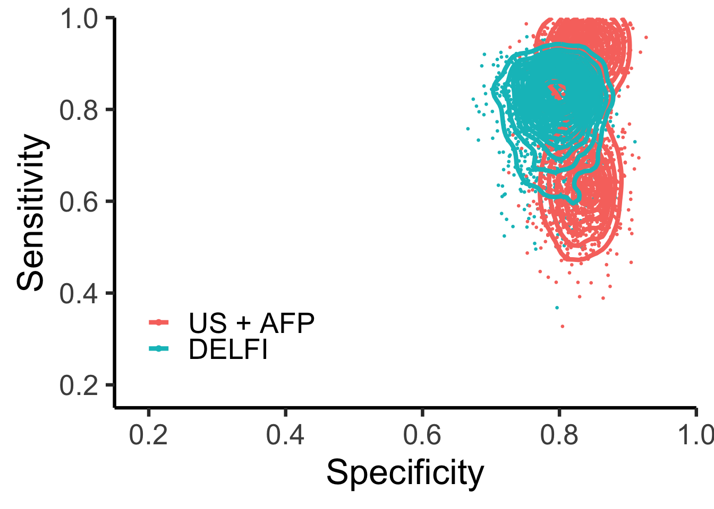
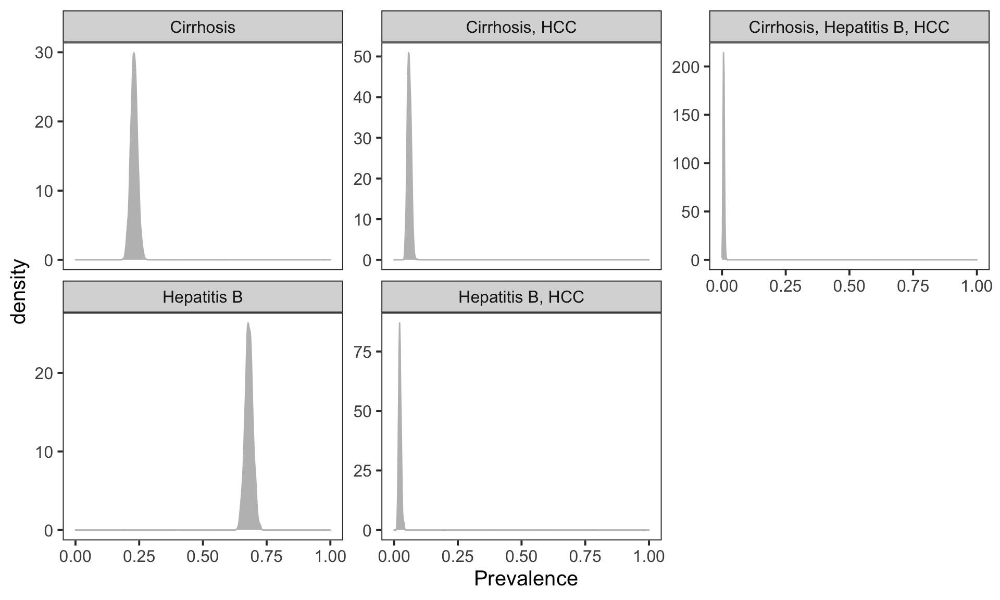
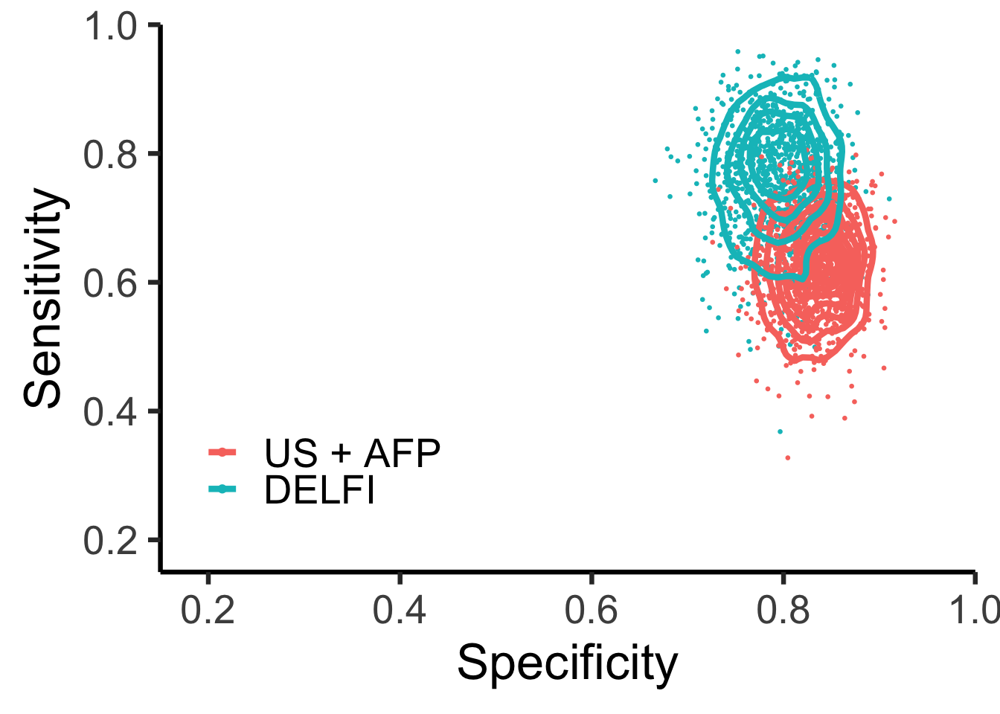
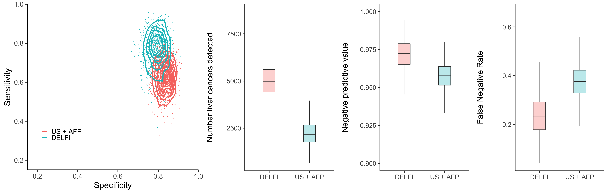

Last updated: 2022-11-17
Checks: 7 0
Knit directory: foda2022/
This reproducible R Markdown analysis was created with workflowr (version 1.6.2). The Checks tab describes the reproducibility checks that were applied when the results were created. The Past versions tab lists the development history.
Great! Since the R Markdown file has been committed to the Git repository, you know the exact version of the code that produced these results.
Great job! The global environment was empty. Objects defined in the global environment can affect the analysis in your R Markdown file in unknown ways. For reproduciblity it’s best to always run the code in an empty environment.
The command set.seed(20221117) was run prior to running
the code in the R Markdown file. Setting a seed ensures that any results
that rely on randomness, e.g. subsampling or permutations, are
reproducible.
Great job! Recording the operating system, R version, and package versions is critical for reproducibility.
Nice! There were no cached chunks for this analysis, so you can be confident that you successfully produced the results during this run.
Great job! Using relative paths to the files within your workflowr project makes it easier to run your code on other machines.
Great! You are using Git for version control. Tracking code development and connecting the code version to the results is critical for reproducibility.
The results in this page were generated with repository version 087127b. See the Past versions tab to see a history of the changes made to the R Markdown and HTML files.
Note that you need to be careful to ensure that all relevant files for
the analysis have been committed to Git prior to generating the results
(you can use wflow_publish or
wflow_git_commit). workflowr only checks the R Markdown
file, but you know if there are other scripts or data files that it
depends on. Below is the status of the Git repository when the results
were generated:
Ignored files:
Ignored: analysis/.DS_Store
Ignored: analysis/.Rhistory
Ignored: code/.DS_Store
Ignored: code/.Rhistory
Ignored: code/liver.tools/.DS_Store
Ignored: data/.DS_Store
Ignored: data/TCGA/.DS_Store
Ignored: data/TCGA/.Rhistory
Ignored: data/two_test_plan/.DS_Store
Ignored: data/two_test_plan/Old_dont_delete_yet/.DS_Store
Ignored: output/.DS_Store
Note that any generated files, e.g. HTML, png, CSS, etc., are not included in this status report because it is ok for generated content to have uncommitted changes.
These are the previous versions of the repository in which changes were
made to the R Markdown (analysis/Rob_AFP.Rmd) and HTML
(docs/Rob_AFP.html) files. If you’ve configured a remote
Git repository (see ?wflow_git_remote), click on the
hyperlinks in the table below to view the files as they were in that
past version.
| File | Version | Author | Date | Message |
|---|---|---|---|---|
| Rmd | 087127b | shay-279 | 2022-11-17 | Paper publication |
| html | 087127b | shay-279 | 2022-11-17 | Paper publication |
In a future study of 100,000 participants, what is our predictive distribution for the following: - number individuals screened - liver cancers detected by delfi - liver cancers detected by ultrasound (US) + alpha fetal protein (AFP) - false positives leading to unnecessary follow-up procedures by these approaches - individuals with liver cancer not identified ( false negatives )
The size of the screening study is determined by the number of samples collected in a finite period of time. Studies with lower adherence to surveillance guidelines have fewer participants.
find_params <- function(i, dat){
dat <- dat[i, ]
params <- epi.betabuster(mode=dat$mode,
conf=0.975,
greaterthan=TRUE,
x=dat$lower,
max.shape1=500,
conf.level=0.95)
dat$shape1 <- params$shape1
dat$shape2 <- params$shape2
dat
}
params <- seq_len(nrow(tools)) %>%
map_dfr(find_params, dat=tools)simulate_performance <- function(i, params, N=1000){
p <- params[i, ]
x <- rbeta(N, shape1=p$shape1, shape2=p$shape2)
x
}
simvalues <- seq_len(nrow(tools)) %>%
map(simulate_performance, params=params)
params$simulation <- simvalues
params2 <- params %>%
filter(metric != "adherence") %>%
pivot_wider(id_cols=c("tool", "population"),
names_from="metric",
values_from="simulation") %>%
unnest(c("sensitivity", "specificity"))
adhere <- params %>%
filter(metric=="adherence") %>%
unnest(simulation) %>%
select(tool, population, simulation) %>%
set_colnames(c("tool", "population", "adherence")) %>%
nest(adherence=adherence)
params3 <- params2 %>%
nest(performance=c(sensitivity, specificity))
params4 <- left_join(params3, adhere,
by=c("tool", "population"))
panelA.data <- params2 %>%
mutate(population=factor(population,
rev(c("High risk", "Early stage"))))panelA.data<-panelA.data %>% filter(tool %in% c("DELFI", "US + AFP"))
panelA.data$tool<-factor(panelA.data$tool,levels=c("US + AFP","DELFI"))
panelA <- panelA.data %>%
ggplot(aes(specificity, sensitivity)) +
geom_point(aes(color=tool), size=0.5) +
theme_classic(base_size=25) +
theme(panel.grid=element_blank()) +
geom_density2d(aes(color=tool), size=1.5) +
scale_y_continuous(expand=c(0, 0), limits=c(0.15, 1)) +
scale_x_continuous(expand=c(0, 0), limits=c(0.15, 1)) +
##xlim(c(0.15, 1)) +
##ylim(c(0.15, 1)) +
##facet_wrap(~population, ncol=1) +
theme(strip.background=element_blank(),
legend.position=c(0.2, 0.25)) +
guides(color=guide_legend(title="",
override.aes=list(size=1.5))) +
xlab("Specificity") +
ylab("Sensitivity")
panelA
| Version | Author | Date |
|---|---|---|
| 087127b | shay-279 | 2022-11-17 |
panelA <- ggplotGrob(panelA)Prevalence is probably fairly precise depending on population
prev.wide <- rdirichlet(1000, cohorts$prevalence*1000) %>%
as_tibble() %>%
set_colnames(cohorts$disease)Warning: The `x` argument of `as_tibble.matrix()` must have unique column names if `.name_repair` is omitted as of tibble 2.0.0.
Using compatibility `.name_repair`.prev.long <- prev.wide %>%
pivot_longer(cols=all_of(cohorts$disease), names_to="Disease",
values_to="Prevalence")
prev.long %>%
ggplot(aes(Prevalence)) +
geom_density(color="gray", fill="gray") +
theme_bw(base_size=15) +
facet_wrap(~Disease, scales="free_y") +
theme(panel.grid=element_blank()) +
xlim(c(0, 1))
| Version | Author | Date |
|---|---|---|
| 087127b | shay-279 | 2022-11-17 |
prev3 <- tibble(prevalence=prev.wide[["Cirrhosis, HCC"]] +
prev.wide[["Hepatitis B, HCC"]] +
prev.wide[["Cirrhosis, Hepatitis B, HCC"]])
params4$prevalence <- rep(prev3, 6)sample 100,000 people from high risk population (multinomial)
subsample based on adherence
calculate performance statistics for delfi and US+AFP
repeat 1-3 1000 times
perf <- function(i, object, N=100e3){
dat <- unnest(object[i, ], c("performance",
"adherence",
"prevalence"))
L <- nrow(dat)
set.seed(149491) ## use same random number seed to capture differences in parameters
screened <- rbinom(L, size=N, prob=dat$adherence)
## prevalence
P <- rbinom(L, size=screened, prob=dat$prevalence) ## P = FN + TP
N <- screened - P ## N = TN + FP
TP <- rbinom(L, size=P, prob=dat$sensitivity)
FP <- rbinom(L, size=N, prob=(1-dat$specificity))
TN <- N - FP ## N = FP + TN
FN <- P - TP
fpr <- FP/N
fnr <- FN/P
tnr <- TN/N
tpr <- TP/P ## sensitivity
acc <- (TP+TN)/(P+N)
err <- (FP+FN)/(P+N)
ppv <- TP/(TP+FP)
npv <- TN/(TN+FN)
stats <- tibble("P"=P, "N"=N, "TP"=TP, "FP"=FP, "TN"=TN,
"FN"=FN, "acc"=acc, "err"=err,
"fpr"=fpr, "fnr"=fnr, "tnr"=tnr,
"tpr"=tpr, "ppv"=ppv, "npv"=npv,
"number_screened"=screened)
stats2 <- bind_cols(dat, stats)
stats2
}## for now, we only care about HCC versus not HCC
params5 <- seq_len(nrow(params4)) %>%
map_dfr(perf, params4) %>%
filter(tool %in% c("DELFI", "US + AFP"))
montecarlo <- params5##colors <- c("steelblue", "gray")
npvfig <-
params5 %>%
ggplot(aes(tool, npv)) +
geom_boxplot(aes(fill=tool),
alpha=0.3, width=0.3,
outlier.shape=NA) +
theme_classic(base_size=24) +
theme(panel.grid=element_blank()) +
ylab("Negative predictive value\n") +
xlab("") +
ylim(c(0.9, 1)) +
guides(fill="none")
npvfig2 <- ggplotGrob(npvfig)
tpfig <- params5 %>%
ggplot(aes(tool, TP)) +
geom_boxplot(aes(fill=tool), alpha=0.3,
width=0.3,
outlier.shape=NA) +
##scale_y_log10(limits=c(10, 1200)) +
theme_classic(base_size=24) +
theme(panel.grid=element_blank(),
legend.position=c(0.2, 0.8)) +
guides(fill="none") +
ylab("Number liver cancers detected\n") + xlab("")
tpfig2 <- ggplotGrob(tpfig)
tpfig2$widths <- npvfig2$widths
fnrfig <- params5 %>%
ggplot(aes(tool, fnr)) +
geom_boxplot(aes(fill=tool), alpha=0.3,
width=0.3,
outlier.shape=NA) +
##scale_y_log10(limits=c(10, 1200)) +
theme_classic(base_size=24) +
theme(panel.grid=element_blank(),
legend.position=c(0.2, 0.8)) +
guides(fill="none") +
ylab("False Negative Rate\n") + xlab("")
fnrfig2 <- ggplotGrob(fnrfig)
fnrfig2$widths <- npvfig2$widthsparams.backup <- params5
panelA.data.backup <- panelA.data
params5 <- filter(params5, population=="Early stage")
panelA.data <- filter(panelA.data, population=="Early stage")
##colors <- c("steelblue", "gray")
npvfig <-
params5 %>%
ggplot(aes(tool, npv)) +
geom_boxplot(aes(fill=tool),
alpha=0.3, width=0.3,
outlier.shape=NA) +
theme_classic(base_size=24) +
theme(panel.grid=element_blank()) +
ylab("Negative predictive value\n") +
xlab("") +
ylim(c(0.9, 1)) +
guides(fill="none")
npvfig2 <- ggplotGrob(npvfig)
tpfig <- params5 %>%
ggplot(aes(tool, TP)) +
geom_boxplot(aes(fill=tool), alpha=0.3,
width=0.3,
outlier.shape=NA) +
##scale_y_log10(limits=c(10, 1200)) +
theme_classic(base_size=24) +
theme(panel.grid=element_blank(),
legend.position=c(0.2, 0.8)) +
guides(fill="none") +
ylab("Number liver cancers detected\n") + xlab("")
tpfig2 <- ggplotGrob(tpfig)
tpfig2$widths <- npvfig2$widths
fnrfig <- params5 %>%
ggplot(aes(tool, fnr)) +
geom_boxplot(aes(fill=tool), alpha=0.3,
width=0.3,
outlier.shape=NA) +
##scale_y_log10(limits=c(10, 1200)) +
theme_classic(base_size=24) +
theme(panel.grid=element_blank(),
legend.position=c(0.2, 0.8)) +
guides(fill="none") +
ylab("False Negative Rate\n") + xlab("")
fnrfig2 <- ggplotGrob(fnrfig)
fnrfig2$widths <- npvfig2$widths
panelA.data<-panelA.data %>% filter(tool %in% c("DELFI", "US + AFP"))
panelA.data$tool<-factor(panelA.data$tool,levels=c("US + AFP","DELFI"))
panelA <- panelA.data %>%
ggplot(aes(specificity, sensitivity)) +
geom_point(aes(color=tool), size=0.5) +
theme_classic(base_size=25) +
theme(panel.grid=element_blank()) +
geom_density2d(aes(color=tool), size=1.5) +
scale_y_continuous(expand=c(0, 0), limits=c(0.15, 1)) +
scale_x_continuous(expand=c(0, 0), limits=c(0.15, 1)) +
##xlim(c(0.15, 1)) +
##ylim(c(0.15, 1)) +
##facet_wrap(~population, ncol=1) +
theme(strip.background=element_blank(),
legend.position=c(0.2, 0.25)) +
guides(color=guide_legend(title="",
override.aes=list(size=1.5))) +
xlab("Specificity") +
ylab("Sensitivity")
panelA
| Version | Author | Date |
|---|---|---|
| 087127b | shay-279 | 2022-11-17 |
panelA <- ggplotGrob(panelA)widths <- c(0.45, 0.3, 0.3,.3) %>%
"/"(sum(.))
gl <- grid.layout(1, 4, widths=unit(widths, "npc"),
just=c("left", "bottom"))
grid.newpage()
pushViewport(viewport(layout=gl))
pushViewport(viewport(layout.pos.row=1, layout.pos.col=1))
##pushViewport(viewport(height=unit(0.5, "npc")))
grid.draw(panelA)
popViewport()
pushViewport(viewport(layout.pos.row=1, layout.pos.col=2))
grid.draw(tpfig2)
popViewport()
pushViewport(viewport(layout.pos.row=1, layout.pos.col=3))
grid.draw(npvfig2)
popViewport()
pushViewport(viewport(layout.pos.row=1, layout.pos.col=4))
grid.draw(fnrfig2)
| Version | Author | Date |
|---|---|---|
| 087127b | shay-279 | 2022-11-17 |
mc <- filter(montecarlo, population=="Early stage",
tool %in% c("DELFI", "US + AFP"))
nscreened <- mc %>%
group_by(tool) %>%
summarize(mu=mean(number_screened),
`0.025`=quantile(number_screened, prob=0.025),
`0.975`=quantile(number_screened, prob=0.975)) %>%
mutate_at(2:4, round, 0) %>%
mutate_at(2:4, prettyNum, big.mark=",") %>%
set_colnames(c("tool", "mu", "q2.5", "q97.5")) %>%
unite("ci", c("q2.5", "q97.5"), sep="-")
ndetect <- mc %>%
group_by(tool) %>%
summarize(mu=mean(TP),
`0.025`=quantile(TP, prob=0.025),
`0.975`=quantile(TP, prob=0.975)) %>%
mutate_at(2:4, round, 0) %>%
mutate_at(2:4, prettyNum, big.mark=",") %>%
set_colnames(c("tool", "mu", "q2.5", "q97.5")) %>%
unite("ci", c("q2.5", "q97.5"), sep="-")
tmp <- mc %>%
group_by(tool) %>%
select(tool, TP) %>%
nest()
addl <- tibble(TP.delfi=tmp$data[[1]]$TP, TP.usafp=tmp$data[[2]]$TP) %>%
mutate(diff=TP.delfi-TP.usafp,
fold=TP.delfi/TP.usafp) %>%
summarize(mu=mean(diff),
mu.fold=mean(fold),
q2.5=quantile(fold, prob=0.025),
q97.5=quantile(fold, prob=0.975)) %>%
mutate_at(1, round, 0) %>%
mutate_at(2:4, round, 2) %>%
mutate_at(1, prettyNum, big.mark=",") %>%
unite("ci", c("q2.5", "q97.5"), sep="-")
tmp <- mc %>%
group_by(tool) %>%
select(tool, npv) %>%
nest()
npv <- mc %>%
group_by(tool) %>%
summarize(mu=mean(npv),
`0.025`=quantile(npv, prob=0.025),
`0.975`=quantile(npv, prob=0.975)) %>%
mutate_at(2:4, round, 3) %>%
mutate_at(2:4, scales::percent) %>%
set_colnames(c("tool", "mu", "q2.5", "q97.5")) %>%
unite("ci", c("q2.5", "q97.5"), sep="-")
fnr <- mc %>%
group_by(tool) %>%
summarize(mu=mean(fnr),
`0.025`=quantile(fnr, prob=0.025),
`0.975`=quantile(fnr, prob=0.975)) %>%
mutate_at(2:4, round, 3) %>%
mutate_at(2:4, scales::percent) %>%
set_colnames(c("tool", "mu", "q2.5", "q97.5")) %>%
unite("ci", c("q2.5", "q97.5"), sep="-")params <- round(cohorts$prevalence*1000, 1)
prev <- paste(params, collapse=", ")To evaluate how our approach would perform for surveillance and detection in patients at high-risk for liver cancer, we evaluated the DELFI model in a theoretical population of 100,000 high-risk individuals using Monte Carlo simulations. Given the importance of detection of early-stage cancers, we focused our modeling on the detection of stage 0/A disease. We compared the DELFI approach to the current standard of care, concurrent ultrasound and AFP, and modeled the uncertainty of sensitivity and specificity of these surveillance modalities in this theoretical population through probability distributions centered at empirical estimates from our cohort or from previous reports (Singal et al., 2012, see Methods). Despite surveillance recommendations adherence in the US is low, with the most generous estimates suggesting 39% (46), resulting in an average of 40,042 individuals tested (95% CI, 21,320-61,890). As blood tests offer high accessibility and compliance, with adherence rates of 80–90% reported for blood-based biomarkers(47,48), we conservatively assumed an average of 75% (95% CI, 60-90%) of this population would be tested using the DELFI approach. Similarly, as the prevalence of cirrhosis, hepatitis B, and the co-occurrence of these co-morbidities with HCC could vary by geographic region due to differences in the ancestral composition, environmental exposures, and socioeconomic factors, we used a prior probability distribution to reflect our uncertainty of the composition of these diseases and possible regional differences. Monte Carlo simulations from these probability distributions (Methods) revealed that ultrasound and AFP detected an average of 2,233 individuals (95% CI, 1,088-3,699) with liver cancer (Supplemental Figure 14). Using DELFI, we would detect on average 2,794 additional liver cancer cases, or a 2.46-fold increase (95% CI, 1.25-4.57 fold increase) compared to ultrasound AFP alone (Supplemental Figure 14). The DELFI approach would not only substantially improve detection of liver cancer, but would be expected to increase the negative predictive value of the test (NPV) from 95.7% for ultrasound and AFP (95% CI, 93.8%-97.3%) to 97.1% for DELFI (95% CI, 94.8%-99.0%). These analyses suggest a significant population-wide benefit for using a high-specificity blood-based early detection test as a tool for the detection of liver cancer.
FNR stuff 38% (95% CI, 25%-51.5%) US + AFP 24% (95% CI, 9%-42.6%) DELFI
Monte Carlo simulations were used to compare the DELFI approach to
ultrasound and AFP in a theoretical surveillance population. We used
estimated 95% confidence intervals of sensitivity and specificity for
DELFI and published 95% confidence intervals for US and AFP @ ref. The R
package epiR was used to derive prior predictive
probability distributions (beta distributions) from these confidence
intervals (Carstensen B, Plummer M, Laara E, Hills M (2022). Epi: A
Package for Statistical Analysis in Epidemiology. R package version
2.47, https://CRAN.R-project.org/package=Epi). @ author et al
(year) reported that adherence to US and AFP surveillance was 61% (95%
CI: 42%-79%). As other noninvasive blood-based tests have a reported
adherence of more than 75% (@ ref), we assumed that adherence to DELFI
would be 60% or greater with probability 0.975 or higher. Using these
confidence estimates, epiR was used to derive beta prior predictive
distributions for adherence. We simulated multinomial probabilities for
prevalence of hepatitis B, cirrhosis, hepatitis B + HCC, cirrhosis +
HCC, and hepatitis B + cirrhosis + HCC from a Dirichlet with parameters
230, 680, 60, 23, 7, respectively. For a single Monte Carlo simulation
for US and AFP testing, we
(i) sampled the probability of adherence (\(\eta\)) from the prior predictive
distribution,
(ii) simulated the number of 100,000 individuals (\(S\)) who participated in surveillance
(\(S \sim \text{Binomial}(\eta,
100,000)\)),
(iii) sampled probabilities of co-morbidities (Dirichlet(230, 680, 60,
23, 7)),
(iv) computed the prevalence of HCC (\(\theta\)),
(v) simulated HCC cases \((P \sim
\text{Binomial}(\theta, S))\) and computed the number of
individuals without cancer (\(N = S -
P\)),
(vi) sampled the sensitivity (\(se\))
and specificity (\(sp\)) from the
corresponding prior predictive distributions, and
(vii) sampled the true positives (\(TP \sim
\text{Binomial}(P, se))\) and false positives (\(FP \sim \text{Binomial}(N, 1-sp)\)).
Given TP and FP, we calculated the NPV as (true negatives)/(true
negatives + false negatives), where true negatives = \(N - FP\) and false negatives = \(P - TP\). We repeated the above simulation
1000 times, obtaining a distribution of TP, FP and NPV. Using parameters
for sensitivity, specificity, and adherence for the DELFI approach, we
repeated the same Monte Carlo analysis to allow comparisons between
these two surveillance methodologies.
sessionInfo()R version 4.0.5 (2021-03-31)
Platform: x86_64-apple-darwin17.0 (64-bit)
Running under: macOS Big Sur 10.16
Matrix products: default
BLAS: /Library/Frameworks/R.framework/Versions/4.0/Resources/lib/libRblas.dylib
LAPACK: /Library/Frameworks/R.framework/Versions/4.0/Resources/lib/libRlapack.dylib
locale:
[1] en_US.UTF-8/en_US.UTF-8/en_US.UTF-8/C/en_US.UTF-8/en_US.UTF-8
attached base packages:
[1] grid stats graphics grDevices utils datasets methods
[8] base
other attached packages:
[1] readxl_1.3.1 epiR_2.0.52 survival_3.2-13
[4] magrittr_2.0.1 mvtnorm_1.1-2 forcats_0.5.1
[7] stringr_1.4.0 dplyr_1.0.7 purrr_0.3.4
[10] readr_2.0.1 tidyr_1.1.3 tibble_3.1.4
[13] ggplot2_3.3.5 tidyverse_1.3.1 gtools_3.9.2
[16] gridExtra_2.3 liver.tools_0.0.0.9000 here_1.0.1
[19] workflowr_1.6.2
loaded via a namespace (and not attached):
[1] colorspace_2.0-2 ellipsis_0.3.2 class_7.3-19 rprojroot_2.0.2
[5] flextable_0.8.2 base64enc_0.1-3 fs_1.5.0 rstudioapi_0.13
[9] proxy_0.4-26 farver_2.1.0 remotes_2.4.0 fansi_0.5.0
[13] lubridate_1.7.10 xml2_1.3.2 splines_4.0.5 cachem_1.0.6
[17] knitr_1.33 pkgload_1.2.1 jsonlite_1.7.2 broom_0.7.9
[21] dbplyr_2.1.1 compiler_4.0.5 httr_1.4.2 backports_1.2.1
[25] assertthat_0.2.1 Matrix_1.3-4 fastmap_1.1.0 cli_3.0.1
[29] later_1.3.0 htmltools_0.5.2 prettyunits_1.1.1 tools_4.0.5
[33] gtable_0.3.0 glue_1.4.2 Rcpp_1.0.7 cellranger_1.1.0
[37] jquerylib_0.1.4 vctrs_0.3.8 xfun_0.25 ps_1.6.0
[41] testthat_3.0.4 rvest_1.0.1 lifecycle_1.0.0 devtools_2.4.2
[45] MASS_7.3-54 zoo_1.8-9 scales_1.1.1 hms_1.1.0
[49] promises_1.2.0.1 yaml_2.2.1 memoise_2.0.0 pander_0.6.5
[53] gdtools_0.2.3 sass_0.4.0 stringi_1.7.4 highr_0.9
[57] desc_1.3.0 e1071_1.7-8 zip_2.2.0 pkgbuild_1.2.0
[61] rlang_0.4.11 pkgconfig_2.0.3 systemfonts_1.0.2 evaluate_0.14
[65] lattice_0.20-44 sf_1.0-7 labeling_0.4.2 processx_3.5.2
[69] tidyselect_1.1.1 R6_2.5.1 generics_0.1.0 DBI_1.1.1
[73] pillar_1.6.2 haven_2.4.3 whisker_0.4 withr_2.4.2
[77] units_0.8-0 modelr_0.1.8 crayon_1.4.1 uuid_0.1-4
[81] KernSmooth_2.23-20 utf8_1.2.2 tzdb_0.1.2 rmarkdown_2.10
[85] officer_0.4.4 usethis_2.0.1 isoband_0.2.5 data.table_1.14.0
[89] callr_3.7.0 git2r_0.28.0 reprex_2.0.1 digest_0.6.27
[93] classInt_0.4-3 httpuv_1.6.2 munsell_0.5.0 BiasedUrn_1.07
[97] bslib_0.3.0 sessioninfo_1.1.1